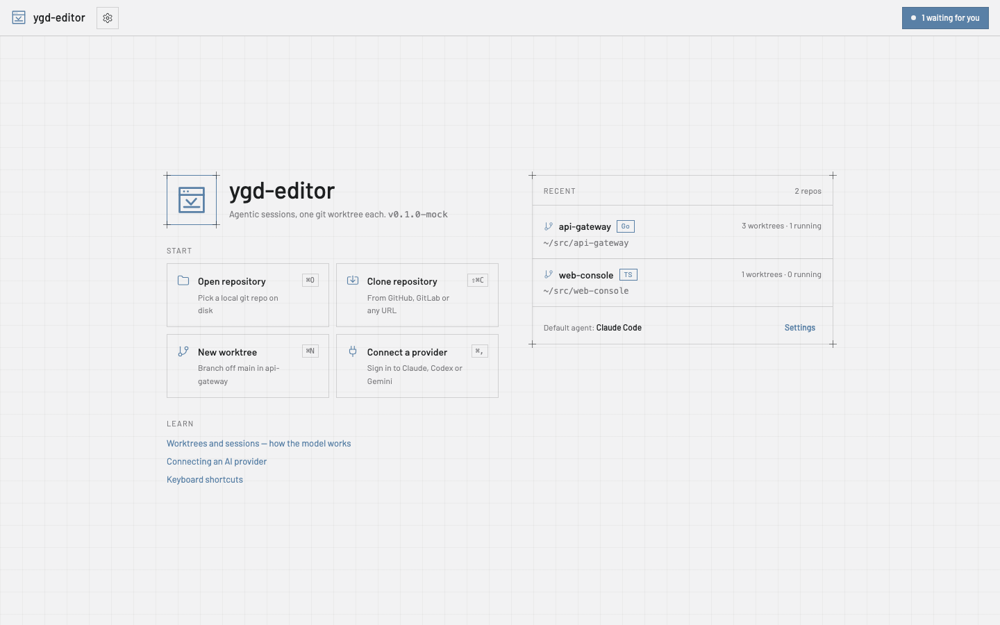
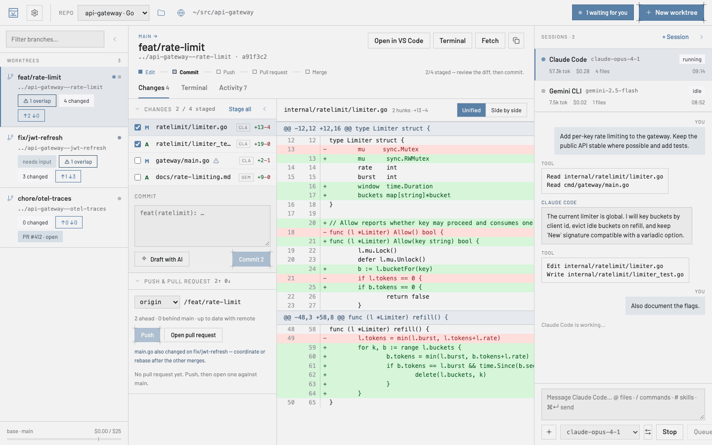
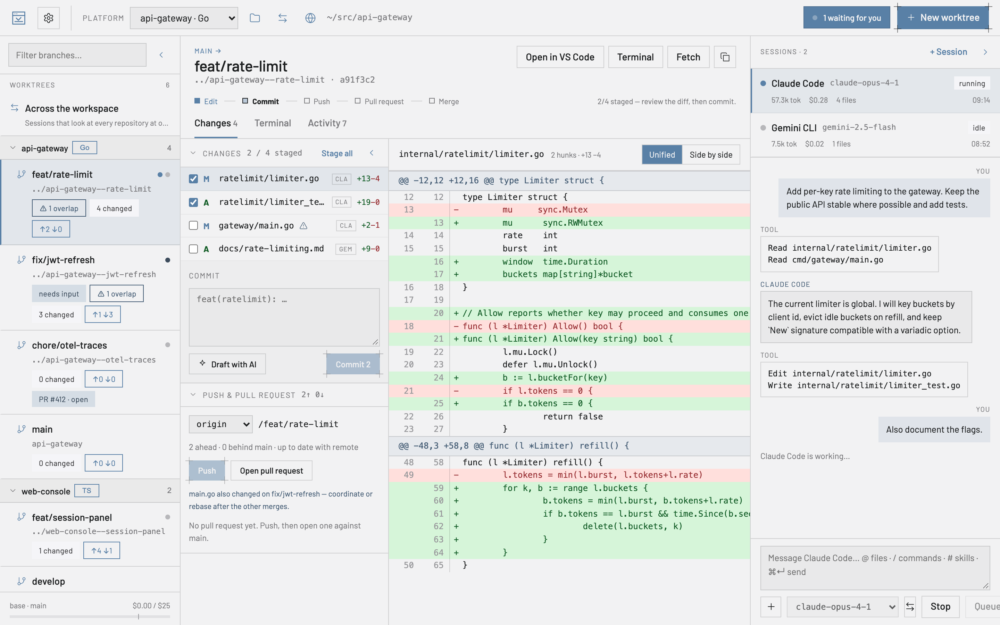
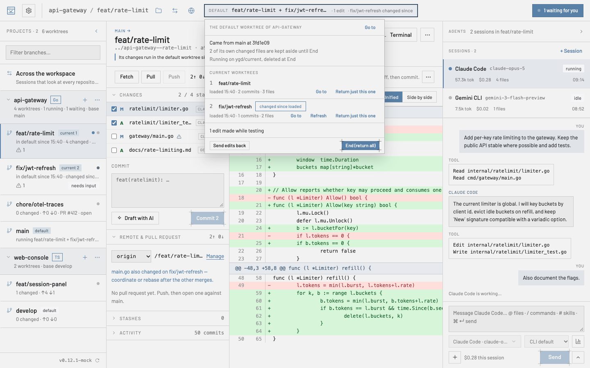
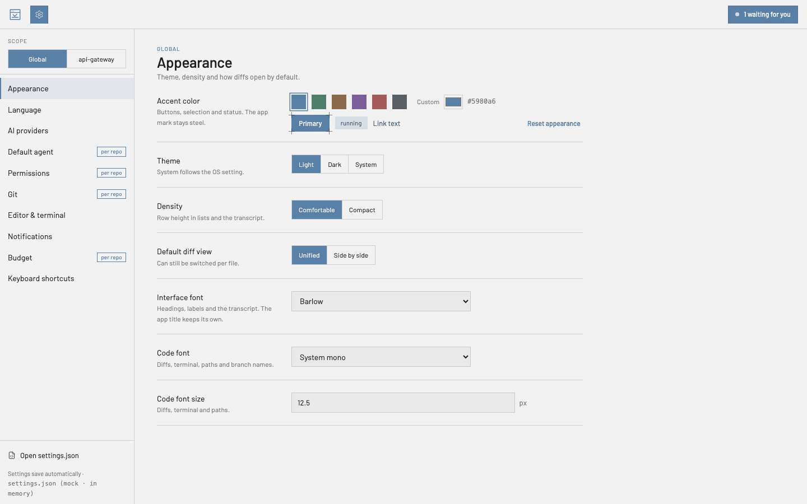

Guide d’utilisation
Tout ce qu’il vous faut pour le premier après-midi avec ygd-editor, en termes simples. Dix minutes de lecture, et vous pouvez revenir à n’importe quelle section depuis la liste.
L’idée en une minute
Un worktree git est un second dossier du même dépôt, sur une autre branche. Au lieu de changer de branche dans un seul dossier — en mettant de côté, en recompilant et en perdant le fil à chaque fois — vous gardez un dossier par tâche.
ygd-editor est construit autour de cela : le panneau de gauche liste vos worktrees, celui du centre montre ce qui a changé dans celui que vous avez choisi, et celui de droite y exécute un agent IA. Deux agents sur deux tâches travaillent dans deux dossiers et ne se heurtent jamais. Quand l’un attend une réponse, la boîte de réception de l’en-tête vous le signale.

Vos dix premières minutes
Après une nouvelle installation, la page d’accueil affiche une liste Pour commencer : git, un fournisseur d’IA, un dépôt, un premier worktree et une première session. Chaque étape a le bouton qui la fait et se coche toute seule une fois faite ; Masquer cette liste la range pour de bon. Voici les mêmes étapes, plus en détail.
- Ouvrez un dépôt. Sur la page d’accueil, choisissez Ouvrir un dépôt et sélectionnez un dossier qui contient déjà git, ou Cloner un dépôt avec une URL GitHub, GitLab ou n’importe quelle URL git. Les dépôts récents restent sur la page d’accueil.
- Créez un worktree. Nouveau worktree (⌘N) propose un nom de branche tiré de la tâche et un dossier où la placer ; vous pouvez renommer les deux selon la convention que vous utilisez. Git n’accepte pas les espaces dans un nom de branche, ils deviennent donc des tirets et la boîte de dialogue vous montre le résultat avant de créer quoi que ce soit. L’emplacement des worktrees sur le disque, et un préfixe suggéré facultatif, se trouvent dans Réglages › Git.
- Lancez une session. + Session dans le panneau de droite choisit un agent et un modèle ; l’agent par défaut est dans Réglages › Agent par défaut. Tapez ce que vous voulez dans le compositeur.
@joint des fichiers ou du contexte comme le diff actuel,/exécute les commandes de l’agent,#ses skills. ⌘↵ envoie. - Laissez-le travailler, ou arrêtez-le. La transcription montre chaque outil que l’agent utilise. Quand il a besoin d’une permission pour quelque chose que vous n’avez pas pré-approuvé, la session passe en attente, la boîte de réception de l’en-tête la compte, et vous autorisez ou refusez ; « Toujours autoriser » mémorise votre choix pour ce worktree. Arrêter interrompt ; ce que vous tapez pendant qu’il travaille est mis en file d’attente.
- Relisez les modifications. L’onglet Modifications liste chaque fichier touché et qui l’a modifié. Cliquez sur un fichier pour le diff ; sélectionnez des lignes et choisissez Expliquer ou Demander une modification pour les renvoyer à l’agent. Un avertissement marque les fichiers qu’un autre worktree du même dépôt touche aussi.
- Commit, push, ouvrez la PR. Cochez les fichiers à indexer, écrivez le message ou Rédiger avec l’IA, Commit. Push configure l’upstream ; Ouvrir une pull request remplit le titre, le corps (rédigé à partir du diff si vous le souhaitez), l’état de brouillon, les relecteurs et les étiquettes, et passe la main à
ghouglab. La carte du worktree affiche ensuite la PR et ses checks.

Au quotidien
Le worktree principal — le dossier avec lequel vous avez ouvert le dépôt — figure avec les autres et c’est de lui que partent les nouveaux worktrees. Sélectionnez-le et cliquez sur le nom de sa branche dans l’en-tête : un champ de recherche se déplie sur toutes les branches — les vôtres, ou une qui n’existe que sur le dépôt distant, qu’il extrait comme nouvelle branche de suivi. Tapez pour filtrer, flèches et Entrée pour changer. Une branche déjà tenue par un autre worktree est listée mais grisée, parce que git n’autorise une branche que dans un seul worktree à la fois.
Mettre à jour depuis la base sur un worktree fait un fetch et un rebase sur la branche de base ; les conflits s’arrêtent avec la liste des fichiers, vous les résolvez, vous indexez et Continuer. Fetch rafraîchit les compteurs d’avance/retard. L’onglet Terminal est un vrai shell dans le dossier du worktree ; Activité est la chronologie de ce qui s’y est passé — commits, pushes, sessions — et survit aux redémarrages.
Transférer une session. Une session peut être transférée vers un autre worktree depuis son menu, transcription comprise, quand vous réalisez que le travail appartient à une autre branche.
Supprimer un worktree termine ses sessions, archive leurs journaux et oublie ses règles de permissions ; la branche reste sauf si vous la supprimez. Réglages › Git peut supprimer le worktree tout seul une fois sa PR fusionnée.
Plusieurs dépôts. Ouvrez-en autant que vous voulez ; l’en-tête passe de l’un à l’autre, et la boîte de réception compte les sessions en attente de tous. Quel que soit le nombre de dépôts récents, la fenêtre s’ouvre dès que celui où vous étiez est chargé, et les autres arrivent derrière.
Git sans terminal
Pull et Mettre à jour depuis la base sont deux choses. Pull récupère ce qui a été poussé sur votre propre branche — le commit d’un collègue, par exemple — pour que votre prochain push passe ; si les deux côtés ont de nouveaux commits, il fait un rebase ou un merge selon Réglages › Git, ou vous demande. Mettre à jour depuis la base, dans le menu ···, est l’autre travail : rattraper la branche de base.
Conflits. Quand un rebase, un merge, un revert ou un cherry-pick s’arrête sur des conflits, ouvrez le fichier et résolvez-le bloc par bloc : gardez un côté, l’autre ou Garder les deux — ou prenez un fichier entier, ou Demander à l’agent. Les deux côtés sont nommés d’après ce qui se passe, pour ne jamais avoir à deviner lequel est « le nôtre ». Marquer comme résolu, puis Continuer sur le bandeau.
Amender. La zone de commit a un interrupteur Amender. Un commit que vous n’avez pas poussé est simplement réécrit. Un commit déjà poussé n’est jamais forcé : l’app le met sur une nouvelle branche, la pousse, ouvre une nouvelle pull request et ferme l’ancienne avec un lien vers la nouvelle.
Historique. Clic droit sur un commit dans Activité pour Copier le SHA, Afficher les modifications, Annuler (revert) ou faire un Cherry-pick dans… un autre worktree.
Pull requests. La carte de la PR liste chaque check, l’avis de chaque relecteur et les commentaires de la revue avec leur fichier et leur ligne. Traiter la revue transmet les commentaires ouverts à l’agent ; Fusionner propose les méthodes que le dépôt autorise et dit pourquoi quand ce n’est pas encore possible. Une fois le travail intégré, Nettoyer les worktrees fusionnés… supprime d’un coup tous les worktrees terminés et nomme ceux qu’il laisse.
Forks. Dans un fork, origin est votre copie et upstream le projet. L’application lit la branche de base sur upstream dès qu’il existe : un nouveau worktree part donc de upstream/main et non de la copie périmée de votre fork, tandis que les push et les pull requests vont toujours vers votre fork ; Fetch récupère les deux. Réglages › Git › Remote de base en choisit un autre, et la fenêtre Dépôts distants le marque base.
Dépôts bare. Un dépôt s’ouvre en entier depuis n’importe lequel de ses dossiers : le principal, un worktree lié, un api.git bare avec ses worktrees à côté, ou une structure proj/.bare. Tous les worktrees sont listés. Un dépôt bare n’a pas de worktree principal : n’importe quel worktree peut être supprimé, et les nouveaux vont à côté du dossier bare (api--fix). Le worktree sur la branche que désigne le dépôt bare tient lieu de worktree par défaut : Rendre courant et Basculer vers… y fonctionnent, et il ne peut pas être supprimé tant qu’un worktree y est courant.
Relire ce qu’un agent a fait
Un tour à la fois. Chaque tour qui modifie des fichiers se termine par une ligne sous lui dans la transcription — 4 fichiers modifiés · +120 −8. Cliquez dessus et l’onglet Modifications montre seulement ce que ce tour a fait. Annuler ce tour… liste d’abord ce qui arrivera à chaque fichier, puis retire les modifications du tour : un fichier que personne n’a touché depuis revient à son état d’avant, un fichier que vous ou un tour suivant avez modifié garde ces modifications, et là où les deux ont changé les mêmes lignes restent des marqueurs de conflit à résoudre. L’annulation est un tour à part entière, on peut donc l’annuler aussi.
Bloc par bloc. Chaque bloc d’un diff a Indexer et Abandonner (Désindexer une fois indexé) ; sélectionnez quelques lignes pour indexer ou abandonner seulement celles-ci. Un fichier indexé en partie a un sélecteur Indexé / Non indexé au-dessus de son diff.
Retrouver une ancienne conversation. Rechercher dans les sessions, en haut du panneau des sessions, cherche dans ce qui a été dit dans ce worktree, le dépôt ou l’espace de travail — et, si vous cochez archivées, dans les worktrees supprimés depuis. La recherche répond pendant que vous tapez, repart à chaque lettre et montre une première page de résultats, avec Afficher plus pour la suite. Un résultat ouvre la session sur ce message. Clic droit sur une session pour Exporter la transcription… : un fichier Markdown avec les prompts, les réponses et les appels d’outils. Rien n’y est masqué, relisez-le donc avant de le partager.
Lire une longue modification. La liste des Modifications regroupe les fichiers par dossier — le bouton dossier à côté du filtre passe à une liste à plat — et le filtre garde les chemins qui contiennent tous les mots que vous tapez. Cochez Vu (V) sur chaque fichier lu : la coche s’enlève toute seule si l’agent modifie à nouveau ce fichier, et Suivant non vu (⇧N) vous emmène au suivant. Dans le diff, N et P sautent de bloc en bloc et W renvoie les longues lignes à la ligne. Les mots modifiés sont surlignés dans la ligne, le code est coloré selon le langage, la vue côte à côte passe en vue unifiée quand le panneau est étroit, les images s’affichent avant et après, et un fichier Markdown peut être affiché Rendu.
Abandonné par erreur ? Abandonner, Abandonner tous les changements, l’abandon d’un bloc ou de quelques lignes et la suppression forcée d’un worktree gardent ce qu’ils jettent. Le bouton Annuler du message le remet en place ; plus tard, Remises › Abandonnés récemment propose Restaurer, et Remiser transforme une entrée en remise ordinaire — le chemin du retour vers les changements d’un worktree supprimé. Remiser tous les changements propose aussi Annuler.
Gros dépôts. Au-delà de 2 000 fichiers non suivis, la liste montre les 2 000 premiers et une ligne par dossier qui compte le reste ; Tout indexer, Commit et .gitignore les couvrent quand même tous. Les fichiers non suivis de plus de 10 Mo sont laissés hors des points de restauration des tours, et le pied du tour dit combien. Si la lecture du worktree prend plus de 5 secondes, le tour n’a pas de point de restauration, et son pied indique qu’il ne peut être ni ouvert ni annulé. Les changements dans node_modules, dist, .next et target ne rafraîchissent plus la liste, et les modifications faites hors de l’application apparaissent même pendant un long push ou fetch. Sous Linux, les dossiers ignorés comme node_modules ne sont plus surveillés dossier par dossier, si bien qu’un gros dépôt reste sous la limite de fichiers surveillés du système. Un diff de plus de 20 000 lignes ou 2 Mo s’ouvre sur sa première partie, avec Charger tout le diff pour le reste, et vous pouvez toujours indexer les lignes affichées.
Commentaires et second avis. Sélectionnez des lignes dans un diff et choisissez Commenter, ou utilisez le + à côté d’une ligne du diff d’un tour. Un commentaire suit sa ligne quand l’agent modifie le code autour, et les commentaires ouverts partent ensemble à l’agent. Relire avec… demande à un autre agent de relire les modifications ou un seul tour, sans le laisser rien modifier. Dans la vue de comparaison de Essayer de N façons, Juger avec… demande à un agent quel essai est le meilleur, et pourquoi.
Des tours qui servent. Commiter ce tour… fait un commit de ce qu’un seul tour a modifié — avec votre nom, votre signature et vos hooks — et laisse tout le reste hors du commit. Le blame peut montrer quel tour a écrit chaque ligne, aussitôt même après une longue session, et l’historique d’un fichier liste ses tours. Bifurquer d’ici… démarre un nouveau worktree à n’importe quel tour, avec les fichiers de ce tour, pour réessayer autrement sans toucher à la session d’origine.
Les agents au travail
Lire la transcription. Les réponses s’affichent en texte mis en forme, et chaque bloc de code a un bouton Copier. Trois appels d’outils ou plus à la suite se replient en une ligne qui s’ouvre pour les montrer. Un chemin vers un fichier du worktree est un lien : un fichier modifié ouvre son diff, les autres s’ouvrent dans votre éditeur. Remontez pour lire et la transcription cesse de suivre ; Aller aux derniers vous ramène en bas. Si une session a été arrêtée pendant qu’elle demandait une autorisation, la transcription le signale.
Longues sessions. Une session s’ouvre sur ses derniers messages, et Afficher les messages précédents charge le reste quand vous le voulez. Une session que vous ne regardez pas ne garde en mémoire que les 200 dernières lignes de sa transcription, pour que des heures de travail n’alourdissent pas l’application ; le même bouton ramène le reste depuis le disque. Pour que l’historique ne grossisse pas sans fin, Réglages › Agent par défaut a Conserver les sessions pendant (jours) et Espace maximal des sessions (Mo) : au lancement, l’application supprime ce qui est plus ancien ou dépasse la limite. Les deux sont désactivés tant que vous ne les réglez pas.
Arrêter, c’est vraiment arrêter. Arrêter, supprimer un worktree et quitter l’application terminent aussi ce que l’agent a lancé — un serveur de développement, par exemple. Changer de modèle, non, et la limite d’inactivité non plus : Réglages › Agent par défaut › Arrêter les agents inactifs après (30 minutes sauf si vous changez ; vide veut dire jamais) arrête un agent resté inactif aussi longtemps pour libérer sa mémoire, et votre prochain prompt reprend la conversation. Si l’application a planté alors que des agents tournaient encore, le lancement suivant propose de les Arrêter ou de les Laisser tourner.
L’environnement de votre shell. Les agents reçoivent ce qu’exporte votre .zshrc ou votre .bashrc — un proxy, des clés d’API, AWS_PROFILE — comme si vous les aviez lancés depuis un terminal, même quand l’application a été ouverte depuis le Dock ou un menu. Réglages › Éditeur et terminal › Utiliser l’environnement de mon shell le désactive et liste les noms des variables apportées, jamais leurs valeurs. Windows n’en a pas besoin : les applications y reçoivent déjà vos variables.
Des captures d’écran dans les prompts. Collez une capture d’écran dans le compositeur, déposez-y une image ou choisissez-en une avec Joindre une image ou une capture… : elle devient une puce avec une miniature. PNG, JPEG, GIF et WebP, jusqu’à huit par prompt, et une image peut partir seule, sans texte. Claude Code, Codex, Gemini CLI, Copilot CLI et les agents ACP qui acceptent les images les reçoivent ; pour les autres, le compositeur prévient qu’elles seront laissées de côté. Les images sont gardées hors du dépôt et disparaissent avec la session.
Planifier d’abord. Activez Planifier d’abord dans la barre de l’agent, ou cochez-le dans la fenêtre Nouveau worktree : l’agent lit le code et répond par un plan, mais n’écrit rien tant que vous ne l’avez pas approuvé. Chaque agent utilise son propre mode lecture seule quand il en a un, et l’application bloque toute écriture quand il n’en a pas. Le mode plan d’Antigravity peut quand même écrire : Planifier d’abord n’est donc pas proposé pour lui.
Terminé veut dire que les tests passent. Réglages › Préparation des worktrees › Porte de vérification lance la commande de vérification du worktree — pnpm test, par exemple — chaque fois qu’un agent termine un tour qui a modifié des fichiers. Un échec repart vers l’agent, et la session affiche un badge rouge jusqu’à ce qu’une exécution passe. Renvoyer les échecs fixe combien de fois d’affilée, et Durée maximale de la vérification combien de temps une vérification peut tourner.
Continuer avec un autre agent. Continuer avec un autre agent…, dans le menu ··· du compositeur ou dans celui du worktree, démarre un autre agent dans le même worktree. Son premier prompt est un passage de relais que l’application rédige : la conversation jusque-là en bref, chaque tour avec les fichiers qu’il a modifiés, un plan qui attend encore d’être approuvé et le dernier résultat de vérification.
Des prompts réutilisables. / dans le compositeur liste d’abord vos prompts enregistrés, puis les commandes propres à l’agent, quel que soit l’agent. {{branch}}, {{base}}, {{issue}} (le numéro dont la branche porte le nom) et {{selection}} (les lignes sélectionnées dans le diff) sont remplis pour vous. Bibliothèque de prompts… garde les vôtres ; un dépôt peut porter les siens sous forme de fichiers Markdown dans .ygd/prompts.
Instructions et serveurs MCP, une fois pour tous les agents. Instructions des agents… modifie AGENTS.md, CLAUDE.md, GEMINI.md et les autres fichiers d’instructions d’un worktree au même endroit, indique quels agents lisent chacun d’eux et peut garder les autres synchronisés à partir de AGENTS.md. Réglages › Serveurs MCP déclare un serveur une fois et le transmet à chaque agent qui peut en prendre un. Un dépôt peut déclarer les siens dans .ygd/mcp.json ; l’application montre leurs commandes et demande avant de les lancer la première fois, et de nouveau chaque fois que le fichier change. Un serveur peut aussi être distant : une adresse https au lieu d’une commande, avec son jeton bearer lu dans une variable d’environnement que vous nommez, si bien que le jeton n’est jamais écrit dans les réglages ni dans le dépôt. Si cette variable n’est pas définie au démarrage d’une session, aucun jeton n’est envoyé.
Plusieurs agents à la fois
Le Centre de contrôle (⌘⇧O) met toutes les sessions d’agents de l’espace de travail sur un seul tableau, en cinq colonnes : En attente de réponse, En cours, Inactives avec des modifications non relues, PR ouverte et Terminées. Une carte montre ce que fait la session, ce qu’elle a coûté et sa pull request. Approuver et Refuser répondent à une demande en attente, et Aperçu montre les derniers messages avec une zone de réponse, sans quitter le tableau.
Le Tableau des tâches (⌘⇧B) est un backlog par dépôt. Une tâche est un prompt avec un agent, un modèle et une base ; Lancer la démarre dans son propre worktree, et le tableau la suit à travers En file, En cours, Attend une réponse, Prête à relire, PR ouverte et Fusionnée. Les tâches en file démarrent dans l’ordre tant que moins de sessions travaillent que ne le permet Réglages › Agent par défaut › Sessions simultanées. Avec Répéter, une tâche peut aussi revenir chaque jour ou chaque semaine à une heure fixe — « mettre à jour les dépendances chaque lundi » — et chaque exécution a un nouveau worktree sur une branche nommée d’après son jour.
Depuis une issue ou une pull request. Dans la fenêtre Nouveau worktree, Partir de choisit l’une des issues ouvertes du dépôt — la branche est nommée d’après elle, et l’agent reçoit l’issue à lire — ou extrait la pull request ouverte de quelqu’un, pour la relire ou la terminer. Cela passe par gh ou glab.
Fenêtres de l’abonnement. Pour Claude Code et Codex, le panneau d’utilisation montre quelle part des fenêtres de 5 heures et de la semaine est consommée et quand chacune se réinitialise. L’application lit les chiffres des CLI elles-mêmes et n’appelle jamais un fournisseur. Réglages › Budget › Retenir le nouveau travail à fait attendre la réinitialisation aux tâches en file et aux prompts pour cet agent ; un tour déjà en cours se termine.
Loin de la fenêtre. L’icône de la barre des menus (la zone de notification sous Windows et Linux) liste les sessions qui vous attendent, avec Approuver et Refuser sur place, même quand la fenêtre est fermée. Réglages › Notifications › Notifications sur le téléphone envoie « attend une réponse » et les checks en échec sur votre téléphone via ntfy ou un webhook compatible Slack. Seuls l’agent, la branche et ce qui s’est passé quittent l’ordinateur, sauf si vous activez Inclure les détails. Notifier seulement après une absence de (minutes, désactivé par défaut) retient les notifications jusqu’à ce que le clavier et la souris soient restés inutilisés aussi longtemps : rien ne vibre pendant que vous êtes à votre bureau avec l’application derrière une autre fenêtre.
De nombreuses branches vers main
Radar de collisions. Deux worktrees qui modifient la même fonction ne s’en aperçoivent qu’au moment où le second est intégré — sauf si vous regardez avant. Radar de collisions… compare chaque paire de worktrees d’un dépôt, travail non commité compris, et chacun avec sa base, montre où ils entreraient en conflit et suggère l’ordre d’intégration qui donne le moins de conflits. Rien ne bouge dans vos worktrees pendant qu’il regarde. Pour rester rapide, il ne compare que les worktrees les plus récemment actifs — 12, sauf si Réglages › Git › Radar de collisions : worktrees comparés en décide autrement (de 2 à 40, par dépôt aussi) — et nomme ceux qu’il a laissés de côté.
Ranger les commits (⌘⇧T, ou Activité › Ranger les commits…) liste les commits propres à la branche, du plus ancien au plus récent. Pour chacun : Garder, Changer le message, Intégrer au précédent ou Supprimer ; déplacez-les vers le haut ou vers le bas, ou Tout fusionner en un avec un message rédigé à partir d’eux. Aucun éditeur ne s’ouvre, et rien n’est laissé à moitié fait.
Worktrees empilés. Nouveau worktree par-dessus…, dans le menu du clic droit d’un worktree, démarre un worktree depuis la branche de celui-ci — commits non poussés compris — pour qu’une grosse modification parte en une chaîne de petites pull requests, chacune visant la branche du dessous. La barre latérale imbrique la pile. Réempiler met à jour les worktrees du dessus quand celui du dessous bouge, et quand celui du bas est fusionné, le suivant est reciblé sur la base.
File d’intégration. Intégrer les worktrees… liste les worktrees prêts du dépôt dans l’ordre du radar, les piles de bas en haut, et les intègre un par un : il met chacun à jour avec la base telle qu’elle est après l’intégration du précédent, lance votre vérification, fait le push, attend les checks de la pull request et la fusionne — ou fusionne en local si vous préférez. Il s’arrête au premier problème et dit pourquoi.
Corriger la CI. Quand les checks d’une pull request échouent, Corriger la CI sur sa carte envoie à l’agent les journaux en échec de GitHub Actions ou de GitLab, réduits aux erreurs et débarrassés de tout ce qui ressemble à un secret. Réglages › Git › Corriger automatiquement la CI en échec laisse l’application le faire toute seule, jusqu’à Corrections automatiques de CI par pull request fois d’affilée, pour un worktree qui a déjà une session ; Démarrer une session pour les corrections automatiques de la CI (désactivé par défaut) lui permet d’en démarrer une, avec l’agent par défaut du dépôt et dans les mêmes limites.
Des worktrees prêts à démarrer
Un nouveau worktree n’a aucun de vos fichiers ignorés : ni .env, ni node_modules. Réglages › Préparation des worktrees règle cela une fois pour toutes : des fichiers à copier depuis le worktree principal (.env*, par exemple), des commandes à lancer dans le terminal du nouveau worktree (pnpm install) et un port de base, pour que chaque worktree ait son propre port dans YGD_PORT et que deux serveurs de développement cessent de se disputer le même. Le terminal du worktree et ses agents reçoivent aussi YGD_WORKTREE et YGD_BRANCH. La fenêtre Nouveau worktree montre ce que fera la préparation ; Relancer la préparation est dans le menu ···. Sur macOS, un dossier copié, node_modules par exemple, est cloné en une fois et n’occupe presque pas d’espace disque en plus.
Un dépôt peut porter la même recette dans .ygd/worktree.json. Ses commandes viennent de l’auteur de la branche : l’app vous les montre et demande avant de les lancer la première fois — et de nouveau chaque fois que le fichier change.
Des worktrees côte à côte. Variables du worktree (une NAME=value par ligne) donne à chaque worktree ses propres valeurs dans ses terminaux, sa préparation et ses agents : COMPOSE_PROJECT_NAME={{slug}} ou DATABASE_URL=…/app_{{n}} permet à deux worktrees de lancer docker compose up sans partager de conteneurs ni de base de données. Écrire les variables dans les met aussi dans un fichier comme .env.local, pour les outils qui en lisent un.
Garder le disque en ordre. Hygiène des worktrees…, dans le menu ··· d’un dépôt, montre la place qu’occupe chaque worktree sur le disque — dépendances et résultats de build à part — et quand il a bougé pour la dernière fois. De là, vous pouvez élaguer les worktrees dont le dossier a disparu, déverrouiller, réparer, lancer le ramasse-miettes de git et donner à un worktree un sparse checkout limité aux dossiers dont il a besoin.
Terminaux
Plusieurs terminaux. + dans l’onglet Terminal ouvre un autre shell à côté de celui du worktree ; double-cliquez sur un onglet pour le renommer. Lancer ▾ dans la barre d’outils démarre des commandes enregistrées — dev: pnpm dev — chacune dans un terminal à son nom, avec Relancer et Arrêter. @terminal:dev dans un prompt joint ce que ce terminal a affiché.
Ils continuent de tourner. Un terminal garde son programme et son historique pendant que les Réglages, la page d’accueil ou la comparaison sont ouverts : vim, htop ou un serveur de développement sont exactement comme vous les avez laissés. Les huit terminaux affichés le plus récemment gardent leur écran ; un plus ancien est redessiné à partir de sa sortie quand vous y revenez. Les programmes plein écran comme vim, et les shells terminés, gardent toujours le leur. ⌘F (Ctrl+Maj+F sous Windows et Linux), ou la loupe au bout des onglets, cherche dans l’historique. ⌘-clic (Ctrl+clic) ouvre un lien dans le navigateur. ⌘⇧] et ⌘⇧[ (Ctrl+Page suivante et Ctrl+Page précédente) passent au terminal suivant et précédent. Fermer un terminal qui exécute encore quelque chose demande d’abord confirmation et nomme le programme.
Essayez de plusieurs façons
Vous ne savez pas quel agent ou modèle fera le mieux une tâche ? Cochez Essayer de N façons dans la fenêtre Nouveau worktree et choisissez de deux à quatre essais — Claude Code, Codex et Gemini CLI, ou le même modèle trois fois. Chacun a son worktree depuis la même base (login-a, login-b…), la préparation tourne dans chacun et le même premier prompt part à tous. Chaque essai compte dans votre budget, et la fenêtre le dit.
Les essais sont regroupés dans la barre latérale. Cliquez sur leur entrée pour les comparer côte à côte : état, fichiers et lignes modifiés, coût, tours et durée, un diff rapide et votre commande de vérification — pnpm test, par exemple, depuis Réglages › Préparation des worktrees — lancée dans chacun à la demande. Garder celui-ci supprime les autres après les avoir listés, peut donner au gagnant le nom de branche sans suffixe et peut enchaîner sur Rendre courant ou une pull request.
Travailler sur plusieurs dépôts : les espaces de travail
Un espace de travail est un ensemble nommé de dossiers que l’application garde ouverts ensemble. Une passerelle, une console web et un dossier de notes forment souvent un seul travail, et une question sur l’un trouve généralement sa réponse dans un autre : un espace de travail est la façon de dire à l’application qu’ils vont ensemble.

En créer un. Ouvrez un second dépôt alors qu’un autre est déjà ouvert et l’application vous demande où il va : l’ajouter à ce sur quoi vous travaillez, démarrer un nouvel espace de travail avec les deux, ou l’ouvrir tout seul. Échap signifie « tout seul ». Vous pouvez aussi en démarrer un depuis la page d’accueil avec Nouvel espace de travail, et ajouter ou retirer des dossiers plus tard depuis le bouton des espaces de travail dans l’en-tête. Retirer un dossier d’un espace de travail ne supprime jamais rien : seul l’ensemble change.
Depuis VS Code. Si votre équipe tient déjà un fichier .code-workspace, Ouvrir un fichier d’espace de travail… le lit : les mêmes dossiers, dans le même ordre, nommés comme VS Code les nomme. Les commentaires et les virgules finales dans le fichier ne posent aucun problème. Les dossiers qui ne sont pas des dépôts git sont conservés — ils n’ont simplement pas de worktrees — et un dossier qui a disparu est signalé plutôt que discrètement écarté. Enregistrer dans le fichier le réécrit en laissant intactes les parties que l’application n’utilise pas, de sorte que le même fichier continue de fonctionner dans les deux outils.
Ce que montre la barre latérale. Les worktrees regroupés par dépôt, chaque groupe repliable, avec le filtre qui cherche dans le nom de branche comme dans le nom du dépôt, pour que vous trouviez une branche sans vous souvenir d’où elle vit. Un groupe replié montre toujours ce qui tourne à l’intérieur, et signale toujours quand une session attend. Avec un seul dépôt, il n’y a aucun groupe.
Ce que voient les agents. Une session s’exécute toujours dans son worktree — c’est là que vivent git et tous les chemins relatifs — mais elle peut aussi lire les autres dossiers de l’espace de travail, si bien que « où aboutit cet appel ? » peut trouver sa réponse de chaque côté. Une session qui ne fait que lire n’a toujours que le droit de lire, partout. Il y a aussi une ligne au-dessus des groupes, Sur tout l’espace de travail, pour les sessions qui n’appartiennent à aucun worktree en particulier : posez-leur les questions qui couvrent toute la pile. Elles n’ont ni branche, ni modifications, ni terminal, parce que cela appartient à un worktree. Un dossier disparu — déplacé, supprimé ou sur un disque débranché — est laissé de côté, et les sessions démarrent quand même.
Réglages. Trois niveaux désormais : Global, l’espace de travail, puis un dépôt en particulier. L’agent par défaut, le préréglage de permissions et la branche de base sont généralement une propriété de la pile plutôt que de chaque dépôt qui la compose, alors définissez-les une fois sur l’espace de travail ; un dépôt qui a besoin d’autre chose peut toujours les remplacer. Le sélecteur de portée dans Réglages choisit le niveau, et une section qui ne remplace rien indique d’où viennent ses valeurs.
L’application mémorise chaque espace de travail séparément : revenez sur l’un d’eux et vous retrouvez le dépôt, le worktree et la disposition des panneaux que vous aviez laissés.
Tester un worktree dans celui par défaut
L'endroit pour essayer une modification est le dossier du dépôt lui-même — le worktree par défaut — parce que c'est là que se trouvent déjà node_modules, .env, le cache de build et le serveur de développement. Le travail se fait dans les autres worktrees. Rendre courant amène l'un d'eux dans le worktree par défaut : ses commits, ce qu'il n'a pas encore committé et ses nouveaux fichiers, par-dessus la branche du worktree par défaut. Dès lors, l'en-tête dit sur chaque écran ce qu'exécute le worktree par défaut — DÉFAUT · feat-a + feat-b · 1 modification — et la barre latérale marque le worktree par défaut et les courants.

Échanger met un autre worktree à sa place. Ajouter en empile un autre par-dessus, pour essayer deux modifications ensemble ; là où les deux touchent les mêmes lignes, le chargement s'arrête sur un conflit dans le worktree par défaut, et pour chaque fichier vous gardez le côté par défaut, prenez celui qui arrive ou le modifiez et le marquez résolu — puis Continuer, ou Annuler pour revenir à ce qui tournait avant.
Les corrections faites pendant les tests rentrent à la maison. Si vous — ou un agent dans le worktree par défaut — corrigez quelque chose en essayant, Renvoyer les modifications le rend au worktree auquel il appartient, en modifications non committées à relire et committer là-bas ; Annuler le reprend jusqu'à l'étape suivante. Un fichier qui appartient à plusieurs worktrees courants, ou à aucun, est demandé plutôt que deviné. Échanger, Ajouter, Rafraîchir et Terminer renvoient d'abord les modifications, donc rien de ce qui a été fait dans le worktree par défaut ne se perd. Renvoyer les modifications, Terminer et Annuler ce tour écrivent les fichiers comme le ferait un checkout — Git LFS, git-crypt et fins de ligne Windows compris ; s’il manque un filtre dont le dépôt a besoin (git-lfs non installé, par exemple), ils s’arrêtent avec le message de git au lieu de laisser des fichiers pointeurs.
Terminer rend le worktree par défaut exactement comme il était : sa branche et ses propres modifications, indexées ou non. Chaque étape ouvre d'abord un bref aperçu : ce qui entre, ce qui est mis de côté, quels fichiers seraient en conflit et ce qui l'empêche maintenant, avec la porte de sortie. On les trouve dans le menu ··· d'un worktree, au clic droit dans la barre latérale, dans la bande de l'en-tête et avec ⌘⇧D / ⌘⇧E.
Réglages › Git peut rafraîchir tout seul un worktree courant quand son agent continue de travailler, et lancer une commande après chaque chargement — pnpm install quand pnpm-lock.yaml a changé, par exemple — dans le terminal du worktree par défaut, où vous la voyez. Votre git stash n'est jamais touché. Il faut git 2.40 ou plus récent.
Aller vite, et ce que cela a coûté
⌘K ouvre la palette de commandes : toutes les actions de l’app — avec leur raccourci, ou la raison pour laquelle elles ne peuvent pas s’exécuter maintenant — plus vos worktrees de tout l’espace de travail, vos sessions, les pages des Réglages et vos dépôts récents. Commencez par > pour les actions, @ pour les worktrees, # pour les sessions ; les flèches et Entrée font le reste.
Ce que cela a coûté. Réglages › Budget a un Rapport d’utilisation : une barre par jour répartie par agent, et ce qu’a dépensé chaque dépôt et chaque branche, sur les 7, 30 ou 90 derniers jours ou les dates de votre choix, avec Exporter en CSV. Les chiffres sont ceux du budget lui-même : ils correspondent toujours au compteur de dépenses.
Agents et fournisseurs
ygd-editor ne parle lui-même à aucun service d’IA. Il exécute les outils en ligne de commande que vous avez déjà — Claude Code, Codex, Gemini CLI, et aussi Antigravity CLI, Cursor CLI, OpenCode, Qwen Code et GitHub Copilot CLI — avec vos propres comptes, si bien que votre utilisation, votre facturation et vos conditions de traitement des données sont exactement celles que vous avez acceptées auprès de ces fournisseurs.
Réglages › Fournisseurs d’IA connecte chaque fournisseur avec votre propre compte : Connecter ouvre la page de connexion du fournisseur dans votre navigateur, et la carte affiche ensuite le compte, le forfait et Changer de compte / Déconnecter / Tester la connexion. Codex et Gemini CLI sont téléchargés par l’application la première fois que vous les choisissez — la carte indique la version et la taille, montre la progression, et Supprimer le téléchargement le retire ; si vous avez votre propre copie installée, l’application utilise celle-là. La licence de Claude Code ne permet pas de l’inclure, sa carte propose donc Installer Claude Code, qui exécute l’installateur officiel d’Anthropic dans le terminal de la carte, dans votre dossier personnel, sans mot de passe administrateur. L’agent et le modèle par défaut, ainsi que le préréglage de permissions, peuvent varier selon le dépôt.
La carte indique aussi quand la CLI installée est plus récente ou plus ancienne que les versions avec lesquelles cette version de l’application a été vérifiée. Les sessions fonctionnent quand même ; la note est là pour expliquer un rapport incomplet. Quand Codex perd la connexion et réessaie, la transcription montre une courte note Reconnexion… au lieu d’une erreur. Pendant que l’application vérifie la version et la connexion de chaque agent, sa carte et le sélecteur d’agent affichent vérification… et montrent ce qui a été trouvé la dernière fois : rien n’a à attendre.
Antigravity, Cursor CLI, OpenCode, Qwen Code et Copilot CLI ne sont pas téléchargés par l’application : leurs cartes exécutent l’installateur de l’éditeur, ou montrent la commande à lancer quand l’éditeur n’en a pas. Tous les agents n’indiquent pas ce qu’ils ont consommé : Cursor n’indique ni jetons ni coût, son coût s’affiche donc inconnu et aucune limite ne le compte.
Tout autre agent qui parle l’Agent Client Protocol — Goose ou Kimi CLI, par exemple — peut être ajouté comme ACP agent : Réglages › Fournisseurs d’IA prend sa Commande de l’agent ACP et ses Arguments de l’agent ACP, tels que sa documentation les donne. L’application n’installe rien pour lui et ne le connecte à aucun compte : connectez-le comme l’explique sa documentation, et Connecter vérifie qu’il répond. S’il refuse de démarrer une session, le message donne sa raison et son propre conseil — Goose, par exemple, demande de lancer goose configure.
Permissions
Les agents demandent avant de faire ce que vous n’avez pas pré-approuvé. Réglages › Permissions propose trois préréglages — strict (lecture seule), équilibré (lire et modifier les fichiers, demander pour tout le reste) et yolo (aussi exécuter des commandes, utiliser le web et faire des push) — plus des interrupteurs individuels pour la lecture, la modification, l’exécution de commandes, l’accès web, le push et la suppression. Quel que soit le préréglage, un agent ne peut jamais supprimer sans demander, sauf si vous l’activez. Seule une vraie commande compte : rm -r écrit dans un message de commit ou un echo n’est pas pris pour une suppression.
Quand une demande arrive, Approuver et Refuser répondent une fois ; Toujours autoriser mémorise cet outil pour ce worktree, et la règle disparaît avec le worktree.
Quand un agent demande plusieurs choses à la fois, les demandes font la queue sur la carte de la session et dans la boîte de réception — 1 sur 3 — et vous y répondez dans l’ordre. Réglages › Permissions › Règles autorisées liste chaque « Toujours autoriser » par worktree, avec sa date d’ajout ; Révoquer prend effet tout de suite, même dans une session en cours. Refuser automatiquement après (minutes, désactivé par défaut) refuse une demande restée sans réponse et dit pourquoi à l’agent. Codex et Gemini CLI ne peuvent pas demander : leur barre d’agent montre donc le mode bac à sable que leur donnent vos interrupteurs ; un clic dessus ouvre Réglages › Permissions.
Bac à sable. Réglages › Permissions › Sandbox décide où les commandes des agents peuvent écrire. Worktree garde leurs écritures dans le worktree ; Sans réseau les coupe aussi du réseau et désactive l’accès web et les push. Le préréglage strict utilise Sans réseau, yolo utilise Worktree, et équilibré le laisse désactivé. Les agents qui ont leur propre bac à sable y soumettent leurs commandes ; les autres n’exécutent aucune commande, ou demandent avant chacune, et la barre de l’agent dit lequel des deux. Dans le bac à sable, Claude Code peut toujours faire un commit dans un worktree lié ; Codex non : faites donc le commit depuis l’application. Le bac à sable tient aussi les agents à l’écart des parties de .git qui détourneraient le git de l’application elle-même, et de l’état d’un rebase : le git rebase, le cherry-pick ou le revert d’un agent y échouent donc. Faites le rebase depuis l’application, avec Mettre à jour depuis la base. Pour la même raison, le git de l’application refuse de s’exécuter dans un worktree principal dont le .git contient un fichier commondir, que git n’y écrit jamais : supprimez-le si vous ne l’y avez pas mis vous-même.
Certaines commandes ne sont jamais mémorisées qu’exactement telles qu’elles sont écrites — supprimer des ressources d’un cluster, des opérations cloud qui ouvrent un accès ou exécutent du code, des requêtes SQL — si bien qu’en approuver une n’approuve jamais la suivante. D’autres ne sont jamais mémorisées et demandent à chaque fois : terraform, tofu ou terragrunt apply ou destroy avec -auto-approve, et toute commande kubectl, oc, aws, docker ou helm dont les options nomment un kubeconfig, un certificat ou un fichier de configuration. Leur demande ne propose pas Toujours autoriser et dit pourquoi sur une ligne sous ses boutons. Les options placées devant une commande — docker --context …, par exemple — ne cachent pas ce qu’elle fait.
Notifications, boîte de réception et budget
Réglages › Notifications choisit quand l’application vous prévient : quand une session attend, quand une session se termine et quand une pull request change — checks terminés, approuvée, modifications demandées, fusionnée. Les pull requests de tous les worktrees sont suivies en arrière-plan, vous êtes donc prévenu en cinq minutes environ, même pour un worktree que vous ne regardez pas ; une fusion repérée ainsi garde la proposition de supprimer le worktree jusqu’à ce que vous répondiez. Les notifications ne s’affichent que lorsque la fenêtre n’est pas au premier plan, un clic sur l’une d’elles ouvre la session, et le badge du Dock ou de la barre des tâches peut compter les sessions en attente.
La boîte de réception de l’en-tête a deux onglets. Attend une réponse regroupe les sessions qui vous attendent. Activité est tout ce que l’application vous a dit — tours terminés, changements de pull requests, échecs avec la sortie complète de git, les messages qui vous auraient échappé — et un clic sur une ligne mène à sa session ou à son worktree. Les lignes non lues sont comptées, Tout marquer comme lu les remet à zéro, et les 200 plus récentes sont gardées d’un redémarrage à l’autre.
La barre de budget en bas du panneau de gauche est la dépense du jour sur toutes les sessions. Quand un agent indique son propre coût, c’est ce chiffre ; sinon ses jetons sont valorisés au prix catalogue du modèle, et les tarifs de Réglages › Budget ne servent qu’aux modèles qui n’en ont pas. La fenêtre d’utilisation et l’info-bulle du coût d’une session disent lequel s’applique. Réglages › Budget fixe aussi une limite quotidienne, une limite par session et un seuil d’avertissement ; avec Mettre les sessions en pause à la limite activé, atteindre la limite quotidienne arrête aussi les tours encore en cours, et un message dit combien.
Réglages
Les Réglages (⌘,) sont regroupés par thème. Apparence définit le thème, la couleur d’accent, la densité et les polices ; Langue bascule l’interface entre anglais, espagnol, italien, polonais, français, allemand et turc. Plusieurs sections portent le badge par dépôt : avec un dépôt sélectionné en haut, vous pouvez les remplacer pour ce dépôt uniquement. Les dates, heures, nombres et coûts suivent la langue choisie, pas celle du système.
Tout s’enregistre automatiquement dans settings.json, dans le dossier de l’application au sein de votre répertoire personnel ; Ouvrir settings.json modifie le fichier brut avec validation, et l’en-tête indique quand il a été écrit pour la dernière fois. Le fichier indique son schéma, si bien qu’un éditeur comme VS Code le complète et le vérifie quand vous le modifiez à la main. Chaque enregistrement garde le fichier précédent sous settings.json.bak ; si le fichier est endommagé, l’application utilise cette copie et vous le dit. Une version plus ancienne de l’application n’écrase jamais un fichier écrit par une plus récente : elle utilise les valeurs par défaut et refuse d’enregistrer les réglages jusqu’à ce que vous mettiez à jour à nouveau. Les espaces de travail, la boîte de réception et les listes de sessions sont gardés de la même façon.
Rechercher dans les réglages, en haut, trouve n’importe quelle ligne par son nom ou par ce qu’elle fait : tapez « limite budget » et Budget s’ouvre avec le curseur dans Limite quotidienne ; ⌘K trouve aussi les réglages. Une ligne que vous avez modifiée affiche un point et son propre Réinitialiser. Les champs numériques refusent une valeur que l’application ne pourrait pas utiliser, disent pourquoi et gardent celle enregistrée.
Exporter un profil de réglages, dans Réglages › À propos et mises à jour, écrit vos réglages, ceux par dépôt et par espace de travail, et vos espaces de travail dans un seul fichier, qui vous est montré avant d’être enregistré, pour configurer un autre ordinateur de la même façon ; Importer un profil de réglages le relit. Les variables des worktrees, les secrets des serveurs MCP et les règles « Toujours autoriser » restent dehors sauf si vous les cochez. Avant qu’un import n’active les corrections automatiques de la CI, ou ne change les limites de budget ou les tarifs d’un agent, il vous le demande.

Petites fenêtres et clavier
Petites fenêtres. La fenêtre descend jusqu’à 900 × 680, si bien que l’application tient à côté d’un éditeur sur un portable de 13 ou 14 pouces. En dessous d’environ 1 180 pixels de large, le panneau des sessions se replie en une barre étroite, et en dessous d’environ 1 000 la liste des worktrees aussi. Cliquez sur la barre pour ouvrir son panneau par-dessus le centre ; Échap, ou un clic à côté, le referme. Votre disposition enregistrée n’est pas touchée : élargissez la fenêtre et les panneaux reviennent comme avant.
Au clavier. Chaque liste — worktrees, sessions, onglets du terminal, sections des Réglages, dépôts récents — est un seul arrêt de Tab. ↑ et ↓ (← et → sur les onglets du terminal), Début et Fin s’y déplacent, Entrée ou Espace choisissent une ligne, la touche Menu ou Maj+F10 ouvre son menu, et F2 renomme un onglet de terminal.
Les questions viennent de l’application. Tout ce qui demande un oui — abandonner des changements, supprimer une remise, fusionner une pull request — demande dans une fenêtre de l’application elle-même, dans votre langue, avec l’action écrite sur le bouton ; Échap veut dire non. Cloner, Transférer la session et Dépôts distants demandent avant de jeter ce que vous y avez tapé.
Dispositions. Le bouton au bout des onglets du terminal place le terminal sous le diff, pour qu’une exécution de tests reste en vue pendant que vous indexez. La palette de commandes passe d’une disposition à l’autre — Revue pour un grand diff, Agent pour une grande transcription, ou les panneaux par défaut — et le Mode concentration (⌘.) masque tout sauf le centre. Une transcription peut aussi s’ouvrir dans sa propre fenêtre — Ouvrir dans sa propre fenêtre, dans le menu du clic droit d’une session —, où la demande d’un outil se règle avec Approuver ou Refuser ; elle se rouvre là où vous l’avez fermée la dernière fois.
Accessibilité. Réglages › Accessibilité a Échelle de l’interface (jusqu’à 150 %), Contraste renforcé, Réduire les animations, Toujours afficher l’anneau de focus et Annoncer aux lecteurs d’écran. Les réglages de contraste et d’animation du système sont suivis aussi.
Mises à jour
Peu après le lancement, puis toutes les six heures tant qu’elle reste ouverte, l’application consulte les versions de ce site et vous prévient quand il y en a une nouvelle. Un clic la télécharge ; avec Réglages › À propos et mises à jour › Télécharger les mises à jour automatiquement activé, elle se télécharge dès qu’elle est trouvée. Rien ne s’installe tant que vous n’avez pas choisi : Redémarrer et mettre à jour maintenant, Redémarrer plus tard — elle s’installe alors quand vous quittez — ou Ignorer.
Une mise à jour ne s’installe que si la liste signée des sommes de contrôle de la version la contient, vérifiée avec le certificat intégré à l’application. Sinon, l’application indique que la mise à jour n’est pas signée par le projet et n’installe rien. Réglages › À propos et mises à jour a aussi Proposer les mises à jour, qui coupe les vérifications, et Rechercher des mises à jour avec l’heure de la dernière vérification.
Le premier lancement après une mise à jour indique quelle version vous utilisez, et son Nouveautés ouvre les notes de version dans l’application. Réglages › À propos et mises à jour et la palette de commandes les ouvrent aussi.
Réglages › À propos et mises à jour › Canal de mise à jour peut passer sur Bêta pour recevoir les préversions avant tout le monde ; elles sont signées et vérifiées comme toute mise à jour. Revenir à Stable n’installe jamais une version plus ancienne : vous restez sur la bêta jusqu’à ce qu’une version stable soit plus récente.
Depuis le terminal : ygd
Installer l’outil en ligne de commande… — dans le menu de l’application sous macOS, dans le menu Fichier sous Windows et Linux — met la commande ygd dans votre PATH. ygd open [folder] ouvre un dépôt dans l’application. ygd run --task "…" lance un agent sur une tâche dans un nouveau worktree ; --agent, --model, --try 2 et --plan fonctionnent comme dans la fenêtre Nouveau worktree. ygd doctor fait le point sur git, le PATH et les CLI des agents sans ouvrir de fenêtre. Quand l’application est fermée, open et run la démarrent.
Les liens ygd:// font la même chose depuis un navigateur ou un script. Pour un dépôt qu’elle n’a encore jamais ouvert, l’application demande d’abord, et les agents dans un bac à sable ne peuvent pas lancer ygd run d’eux-mêmes. Depuis l’AppImage, la commande ne peut pas être installée ; utilisez pour cela le paquet Debian / Ubuntu.
Raccourcis clavier
| ⌘O | Ouvrir un dépôt |
| ⇧⌘C | Cloner un dépôt |
| ⌘N | Nouveau worktree |
| ⌘K | Palette de commandes |
| ⌘, | Réglages |
| ⌘↵ | Envoyer le prompt |
| ⌘F | Chercher dans le terminal |
| ⌘⇧] ⌘⇧[ | Terminal suivant / précédent |
| ⇧N | Fichier suivant non vu |
| ⌘⇧O | Centre de contrôle |
| ⌘⇧B | Tableau des tâches |
| ⌘⇧T | Ranger les commits |
| ⌘. | Mode concentration |
Sous Windows et Linux, lisez ⌘ comme Ctrl — sauf dans le terminal, où chercher se fait avec Ctrl+Maj+F et où Ctrl+Page suivante / Ctrl+Page précédente changent de terminal. La plupart des raccourcis peuvent être modifiés dans Réglages › Raccourcis clavier.
Quand quelque chose ne va pas
macOS dit qu’il n’a pas pu vérifier l’application (Placer dans la corbeille / Terminé). Cliquez sur Terminé, puis Réglages Système › Confidentialité et sécurité › descendez jusqu’à Sécurité › Ouvrir quand même, et confirmez avec votre mot de passe. Sous macOS 14 ou antérieur, clic droit › Ouvrir le fait en une étape. S’il refuse toujours, dans le Terminal : xattr -d com.apple.quarantine /Applications/ygd-editor.app. S’il dit que l’application est endommagée, le téléchargement a été corrompu : téléchargez-la de nouveau et comparez-la à SHA256SUMS.txt.
Éviter complètement l’avertissement. Installez-la depuis le Terminal : curl -fsSL https://mhguitarte.github.io/ygd-editor/install.sh | bash. Il vérifie le téléchargement comme macOS l’aurait fait et place l’application dans Applications ; voir la page de téléchargement.
Windows bloque l’installateur. SmartScreen › Informations complémentaires › Exécuter quand même. L’éditeur doit indiquer ygd-editor release signing.
L’AppImage ne démarre pas. Lancez-le avec --appimage-extract-and-run, ou installez libfuse2.
Un fournisseur affiche « Non installé ». Codex et Gemini CLI sont téléchargés à la demande : cliquez sur Télécharger sur la carte ; si le téléchargement échoue, la carte dit pourquoi (hors ligne, ou un fichier qui ne correspondait pas à sa somme de contrôle et a été écarté). Pour Claude Code, cliquez sur Installer Claude Code sur sa carte ; si vous l’avez installé vous-même, ouvrez un terminal, vérifiez que claude --version fonctionne, puis Réglages › Fournisseurs d’IA › Rechercher à nouveau.
Quelque chose cloche avec git, le PATH ou un agent. Si vous avez installé la commande ygd, ygd doctor dans un terminal dit ce que voit l’application, même quand elle refuse de démarrer.
Erreurs git. L’application explique les plus courantes en une phrase — identifiants, un dépôt distant qui a avancé, un fichier de verrouillage, un arbre de travail modifié, des conflits — et garde la sortie complète dans le terminal du worktree.
Aucune mise à jour n’apparaît. Vérifiez Réglages › À propos et mises à jour › Proposer les mises à jour, puis Rechercher des mises à jour ; l’application doit pouvoir joindre github.com.
Une mise à jour a été refusée car non signée par le projet. Rien n’a été installé. Téléchargez l’installeur depuis Toutes les versions et vérifiez-le comme l’explique Mon téléchargement est-il authentique ?.
Les réglages ne s’enregistrent plus après un retour à une version plus ancienne. L’application plus ancienne laisse intacts les fichiers écrits par la plus récente, utilise les valeurs par défaut et indique de quel fichier il s’agit. Mettez à jour à nouveau et tout sera là où vous l’aviez laissé.
Signaler un problème. Réglages › Diagnostic montre ce dont un rapport de bug a besoin : les versions de l’application, de git et de chaque CLI d’agent, le PATH que reçoivent les agents, les processus d’agents en cours et un journal en direct que vous pouvez filtrer. Ses sections Phases du lancement, Processus git, Trafic IPC et Mémoire et réactivité montrent où passe le temps : la durée de chaque étape du démarrage, les processus git par commande et par ce qui les a lancés, les requêtes les plus chargées entre la fenêtre et l’application, la mémoire et le temps que le travail a dû attendre le fil principal de l’application ; tout cela part aussi dans le paquet. Niveaux du journal règle la quantité de détails — info, git=debug journalise git en détail. Préparer le paquet… rassemble tout dans un zip et liste chaque fichier pour que vous le lisiez avant Enregistrer le zip… : les jetons et les clés d’API sont masqués, ce que vous avez tapé aux agents et dans les terminaux est laissé de côté, et votre dossier personnel apparaît comme ~. Joignez-le à une issue en décrivant ce que vous avez fait, ce que vous attendiez et ce qui s’est passé.
L’application a planté. Une trace en reste sur votre ordinateur, et rien n’est envoyé. Le lancement suivant le signale, et Signaler un bug… dans le menu Aide ouvre une nouvelle issue dans votre navigateur avec la version de l’application, votre système et le dernier plantage déjà remplis — aucun chemin, prompt, réglage ni jeton. Vous la lisez et décidez de l’envoyer ou non.
Désinstaller
Avant de la supprimer — deux étapes facultatives. Si un worktree est courant dans celui par défaut, cliquez sur Terminer, pour que le worktree par défaut retrouve sa branche et ses modifications. Pour vous déconnecter d’un fournisseur, utilisez Déconnecter sur sa carte dans Réglages › Fournisseurs d’IA : les connexions appartiennent à Claude Code, Codex et Gemini CLI, pas à l’application, donc supprimer l’application ne les ferme pas. Si vous avez installé la commande ygd, cliquez sur Retirer dans Réglages › Ligne de commande. Quittez ensuite ygd-editor.
macOS. Glissez ygd-editor depuis Applications vers la Corbeille — depuis ~/Applications si l’installation par le Terminal l’y a mise.
Windows. Paramètres › Applications › Applications installées › ygd-editor › Désinstaller, ou Panneau de configuration › Programmes et fonctionnalités.
Linux. Supprimez le fichier AppImage. Pour le paquet Debian / Ubuntu : sudo apt remove ygd-editor.
Ce qui reste. Vos réglages, espaces de travail, l’historique des sessions et les téléchargements de Codex et Gemini CLI sont dans le dossier .ygd-editor de votre répertoire personnel, et la désinstallation les garde : une réinstallation reprend là où vous en étiez. Pour les supprimer aussi, avec les caches de l’application, lancez ceci après la désinstallation :
macOS:
rm -rf ~/.ygd-editor ~/Library/Application\ Support/ygd-editor ~/Library/Caches/ygd-editor-updater ~/Library/Caches/com.mhguitarte.ygd-editor* ~/Library/HTTPStorages/com.mhguitarte.ygd-editor ~/Library/Preferences/com.mhguitarte.ygd-editor.plist
Windows (PowerShell):
Remove-Item -Recurse -Force -ErrorAction SilentlyContinue "$env:USERPROFILE\.ygd-editor", "$env:APPDATA\ygd-editor", "$env:LOCALAPPDATA\ygd-editor-updater"
Linux:
rm -rf ~/.ygd-editor ~/.config/ygd-editor ~/.cache/ygd-editor-updater
Ce qui n’est jamais touché. Vos dépôts et les worktrees que vous avez créés sont des dossiers git ordinaires et restent où ils sont ; git worktree remove <dossier> en supprime un. Si l’application a installé Claude Code pour vous, il reste dans votre répertoire personnel : la documentation d’Anthropic explique comment le supprimer.
Confidentialité et sécurité
Tout s’exécute sur votre ordinateur. L’application elle-même se connecte à internet pour deux choses : consulter les versions de ce site à la recherche de mises à jour et, une fois par jour, récupérer sur models.dev la liste publique des modèles et de leurs prix. Les agents parlent à leurs fournisseurs avec vos comptes ; git parle à vos dépôts distants avec vos identifiants. Les jetons de fournisseur que l’application conserve sont stockés dans le trousseau du système d’exploitation. L’interface s’exécute dans un bac à sable, chaque requête qui nomme un chemin est vérifiée par rapport aux dépôts que vous avez réellement ouverts, et aucune commande n’est jamais construite à partir d’une chaîne shell. Le paquet de diagnostic et les rapports de plantage sont enregistrés sur votre ordinateur et ne sont envoyés nulle part. Les notifications sur le téléphone, quand vous les activez, n’envoient que l’agent qui a besoin de vous et sur quelle branche, ou la pull request dont les checks ont échoué.
Pour vérifier qu’un téléchargement est bien le nôtre, voir Mon téléchargement est-il authentique ? sur la page de téléchargement.